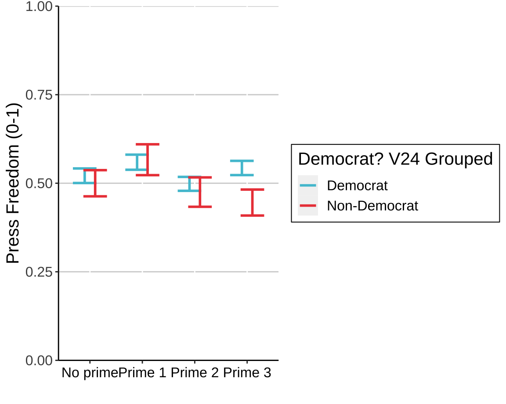
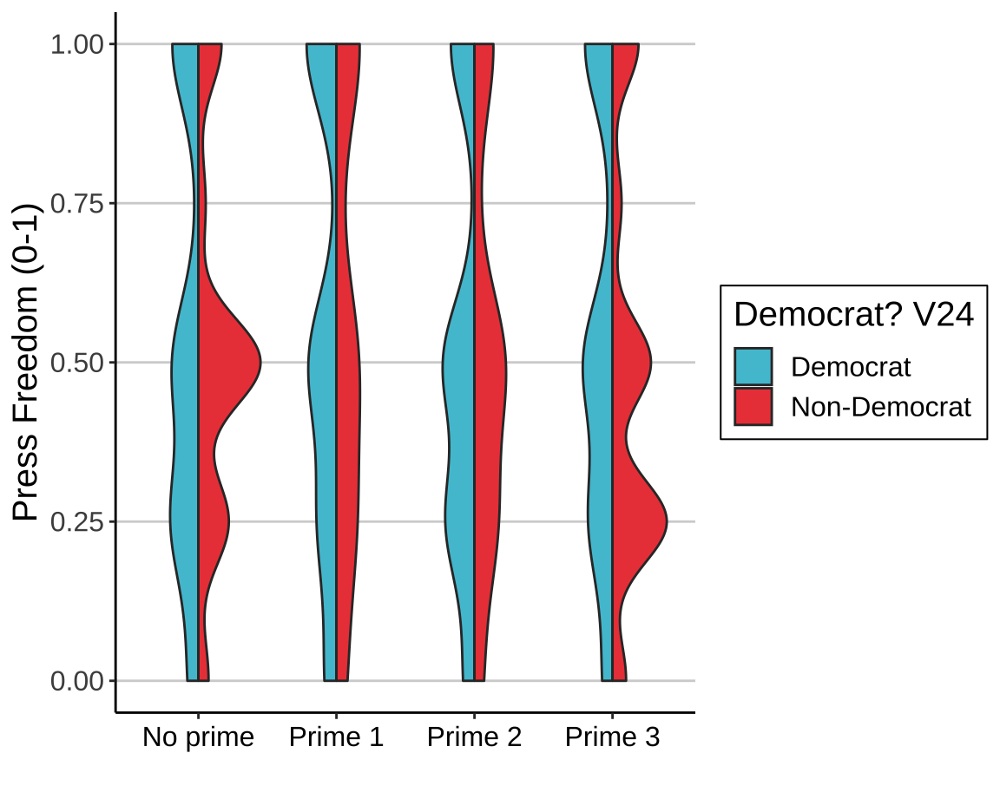

Alternative Plotting Methods
Democrats separated into groups
“Democrats” are those respondents that selected “Strongly agree” or “Agree” “Non-Democrats” are those respondents that selected “Strongly disagree” or “Disagree” Note that those who answered “Neither agree or disagree” are dropped.
Once the “Neither agree or disagree” group is dropped, there are 1518 responses.

Violin Density Plots
This shows the density distributions for Democrats and Non-Democrats next to each other. It might help reveal some larger trends of bimodal distributions among our variables. However, it’s a bit tricky to interpret because respondents could only select 1, 2, 3, 4 or 5 and not any non-whole values. I just included it as a possibility, but not really my favorite option.
